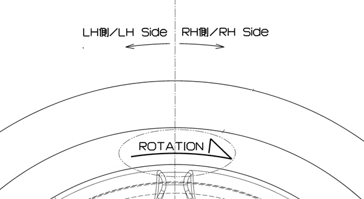

5-1 フロントタイヤ
構成図
|
1 |
WHEEL ASSY,FR RH (D2610-B1000) WHEEL ASSY,FR LH (D2620-B1000) |
2 |
NUT, HUB (D2619-B1000) |
取り外し手順
構成図を参考にして取り外す。
取り付け手順

1.WHEEL ASSY,FR RHおよびWHEEL ASSY,FR LH取り付け
-
ホイールASSYを取り付け、NUT, HUBを手で締め付ける。
-
NUT, HUBを仮締めする。
-
車両をジャッキダウン後、図に示す順にNUT, HUBを本締めする。